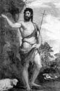

MS 30 yılında ateşli bir Yahudi hatibi, Galilee’nin Roma kuklası kralı Herod Antipas’ı (MÖ 21-MS 39) zina, ensest ve benzeri şeytani günahları işlemekle suçladı. Öfkelenen Kral Herod vaizi tutukladı ve onu Ölü Deniz’e bakan sarp kayalıklara kurulmuş bir cezaevine yolladı.
İşte bu ateşli hatip Vaftizci Yahya’dır (MÖ 6 - MS 30). Hıristiyanlığın temel metni olan İncil’deki en önemli kişilikler arasında yer almaktadır. Vaizlik yaptığı süre içerisinde Herod’a saldırıları ve yaklaşan kıyamete ilişkin vaazlarıyla Vaftizci Yahya büyük bir taraftar kitlesine sahip olmuştur. Tutuklandığı sırada, daha yeni kendi vaazlarını vermeye başlayan Hz. İsa’nın üzerinde çok büyük bir etkisi vardır.

Yahya’nın hayatı ile ilgili pek az tarihi kayıt bulunmaktadır. İncil’deki bilgiler ise oldukça dağınıktır. “Luka İncili”ne göre Yahya, Hz. İsa’nın kuzeniydi. Yahudi peygamberlerinin yolundan giderek eski giysiler giymekte, çekirge ve yaban balı yiyerek yaşamını sürdürmekteydi. Vaazlarına başlamadan önce uzun yıllar Yahuda Çölü’nün insansız bölgelerinde dolaşmıştı.
Vaazları sırasında Yahya, taraftarlarına günahları için tövbe etmelerini, açgözlülük ve zorbalığı reddetmelerini öğütledi. Onlara Ürdün Nehri’nde vaftiz olarak tanrının dünyaya gelişine hazırlanmalarını tavsiye etti. Yahya’nın çağrısına yanıt veren Yahudilerden biri de Hz. İsa’ydı. Yahya yakalanmadan hemen önce Hz. İsa’yı vaftiz etmişti.
Yahya yakalandıktan sonra Hz. İsa’nın, cüzzamlıları iyileştirdiğini, ölüleri dirilttiğini ve daha nice mucizelere imza attığını öğrendi. Bunun üzerine öğrencilerine bu konuyu araştırmalarını salık verdi. Onlar Hz. İsa’nın “Tanrıdan sonra gelen kişi,” yani Mesih olduğunu doğruladılar. Hıristiyan teolojisinde Yahya, Hz. İsa’nın müjdecisi olarak kabul edilmektedir. Mesih’in gelişini önceden bildirmiştir.
Ne yazık ki kısa bir süre sonra Yahya hayatını kaybetmiştir. Herod, Yahya’nın ensestle suçladığı karısının gönlünü almak için peygamberin başını kestirdi ve bir tepsinin üzerinde doğum günü hediyesi olarak üvey kızına gönderdi.
Ek Bilgiler
1- Tarihçi Flavius Josephus (37-100), Yahya’nın yakalanması ile ilgili farklı bir hikaye anlatır. Buna göre Herod, Yahya’nın taraftarlarının bir isyan başlatabilecek kadar kalabalıklaşmış olmasından endişe duyduğu için onu idam ettirmiştir.
2- Resmen hiçbir zaman aziz ilan edilmemiş olmasına rağmen Yahya, Katolik Kilisesi tarafından aziz olarak kabul edilmektedir. Pek çok başka yerin yanı sıra Ürdün ve Porto Riko’nun koruyucu azizidir.
3- Yahya’ya ait olduğu söylenen kesik insan başı Roma’daki San Silvestro Kilisesi’nde sergilenmektedir.